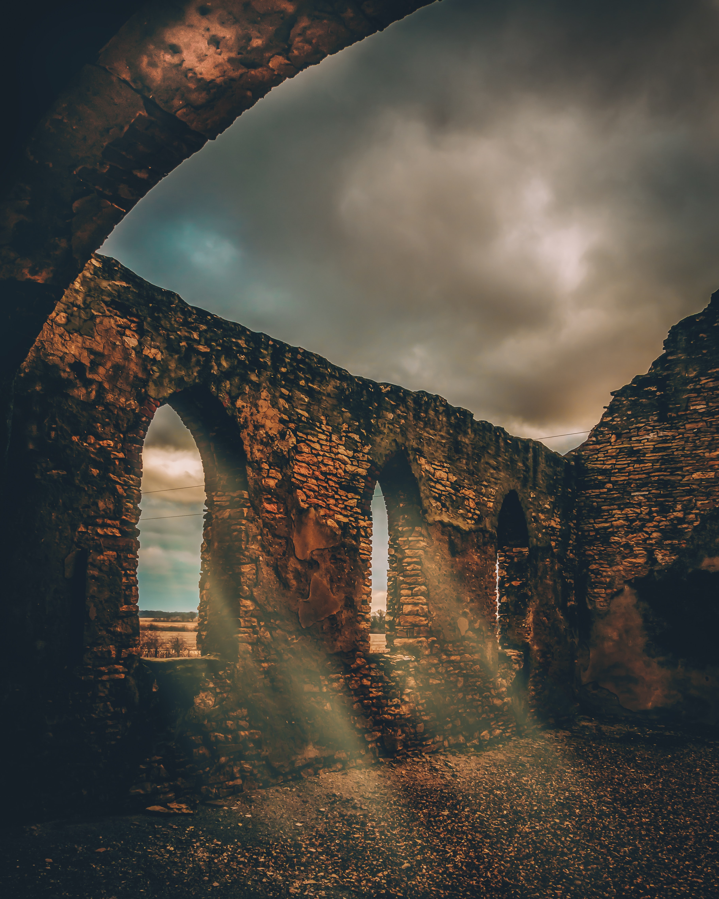

Welcome

This website was created out of passion for history, travel and programming. I wrote the code myself from scratch. At the moment, the website has two sections: Prehistoric sites and Roman sites. It may be expanded in the future. I invite you to read its content. Enjoy!